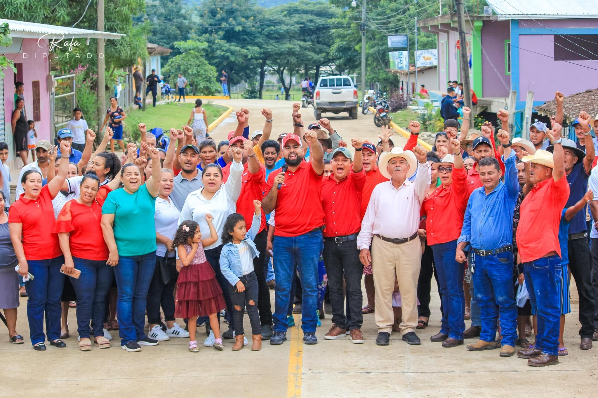
Diputado por Olancho · Congreso Nacional de Honduras
UN MOVIMIENTO
PARA UNIR.
Rafa Sarmiento lidera Renovación Somos, una corriente interna de Libre que apuesta por la unidad, el pensamiento crítico y una oposición real y constructiva para Honduras.
“
En un espacio de participación, diálogo con pensamiento crítico y compromiso, reafirmamos nuestra visión de trabajo por la unidad: una oposición real y constructiva para el desarrollo y el bienestar de la gente.
— Rafa Sarmiento
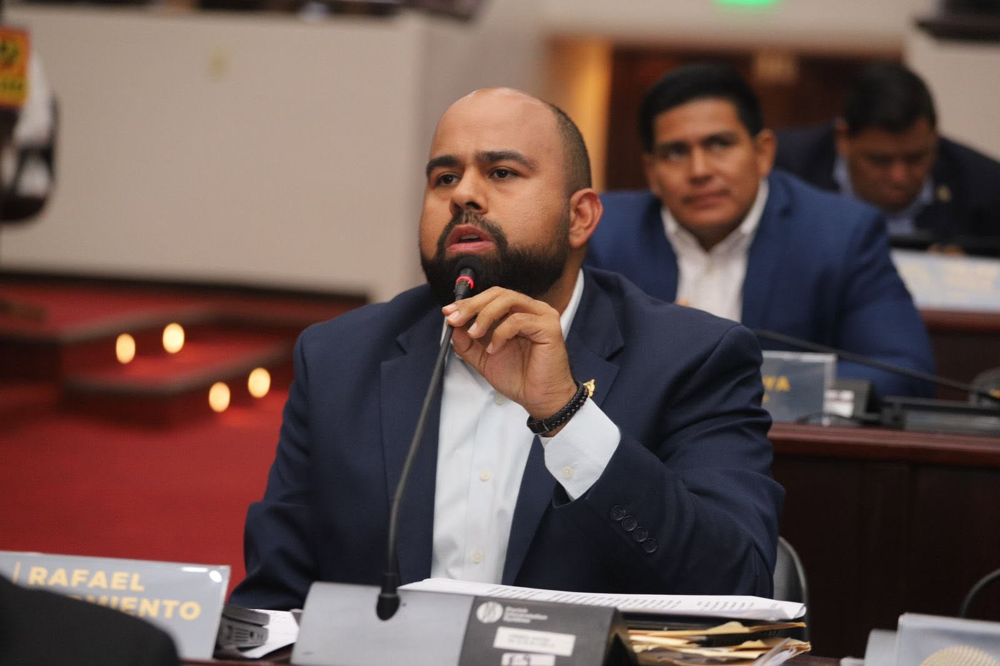
Quiénes Somos
Un diputado que escucha antes de hablar.
Rafael “Rafa” Sarmiento es diputado por el departamento de Olancho ante el Congreso Nacional de Honduras. Su trabajo político nace del contacto directo con las comunidades: caminando las calles de los barrios, escuchando a las bases y respondiendo por la gente que representa.
En 2026 impulsó Renovación Somos, un movimiento interno del Partido Libertad y Refundación (Libre) que busca fortalecer las bases del partido mediante una propuesta de renovación centrada en la unidad y la participación activa de la militancia.
Misión
Impulsar una transformación política que conecte al movimiento con la ciudadanía, especialmente con los jóvenes y las mujeres.
Visión
Ser un movimiento referente de cambio, reconocido por su transparencia y su inclusión.
Valores
- Responsabilidad
- Participación ciudadana
- Equidad
- Compromiso social
- Resiliencia
Nuestros Ejes
Cuatro principios que guían cada decisión.
Transparencia
Compromiso con la honestidad, el acceso a la información y el uso responsable de los recursos públicos.
Equidad e Inclusión
Igualdad de oportunidades sin discriminación por género, edad, condición social u origen.
Juventud y Liderazgo
Protagonismo real para las nuevas generaciones como agentes de cambio en Honduras.
Participación Ciudadana
Más gente incluida en la toma de decisiones y en los espacios de diálogo democrático.
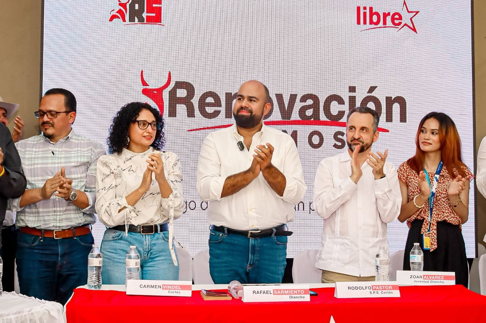
El Movimiento
Renovación Somos nació en Olancho.
En abril de 2026, cientos de hondureños se reunieron en Juticalpa, Olancho, para la Primera Asamblea Departamental provisional del Movimiento Renovación Somos: un espacio de participación y diálogo con pensamiento crítico donde se reafirmó una visión compartida de unidad.
Desde entonces, el movimiento ha seguido creciendo de comunidad en comunidad, con un mismo propósito: unir a la familia hondureña, escuchar a las bases organizativas y sostener el pensamiento crítico como principio fundamental.
Ver la GaleríaGalería
En las calles, con la gente.
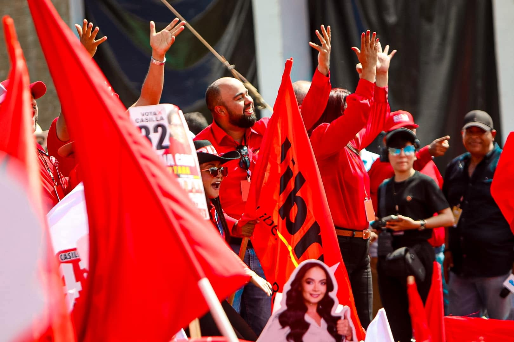
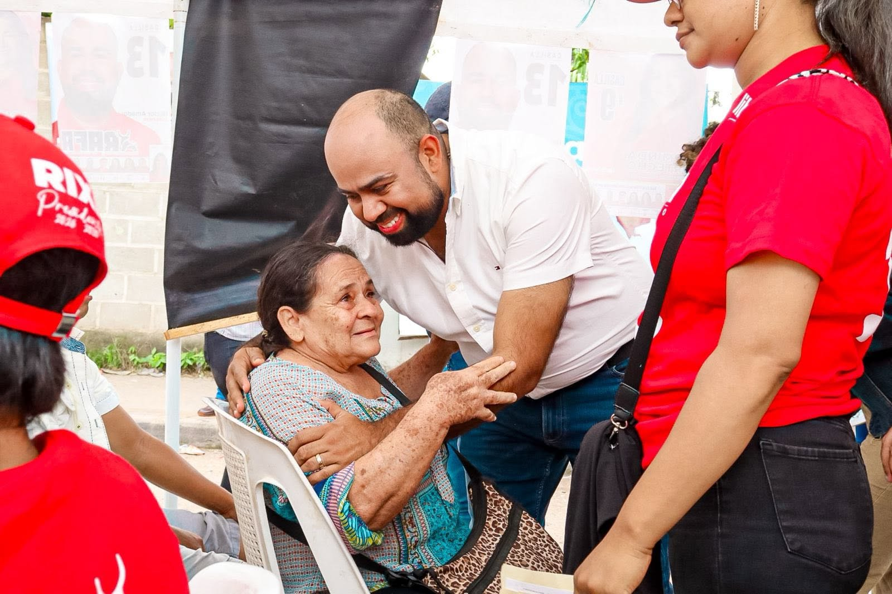
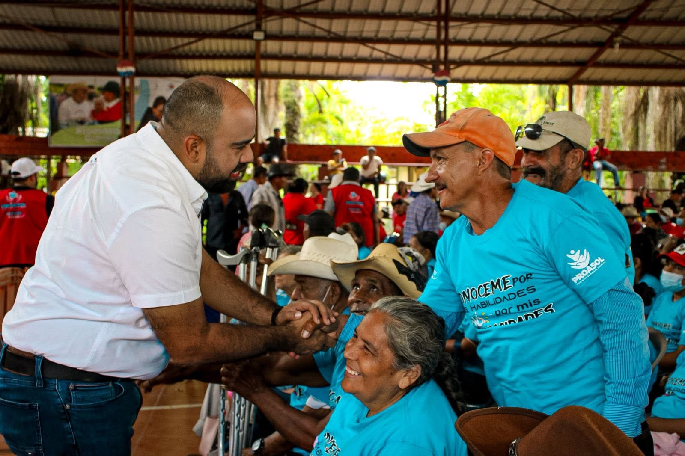
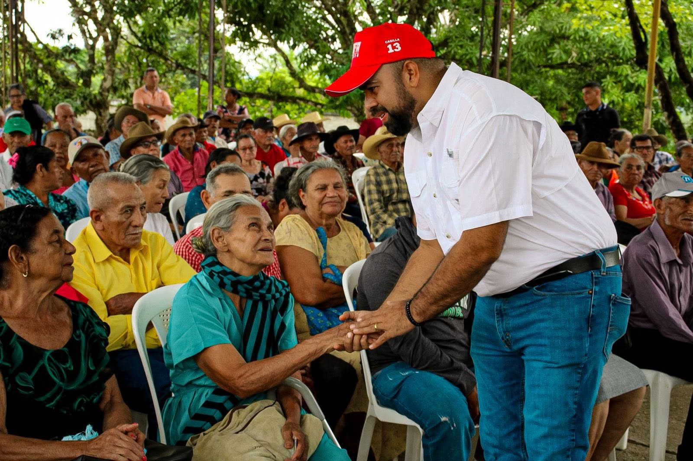
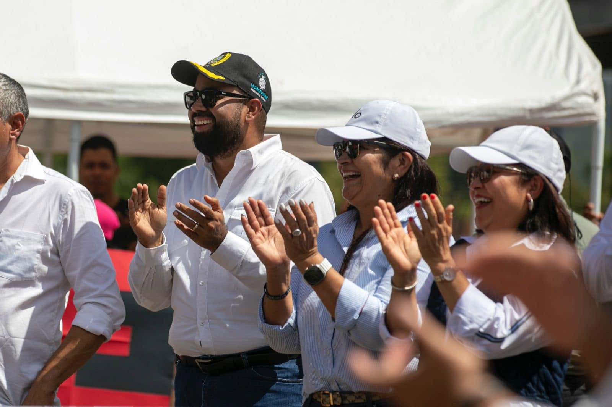
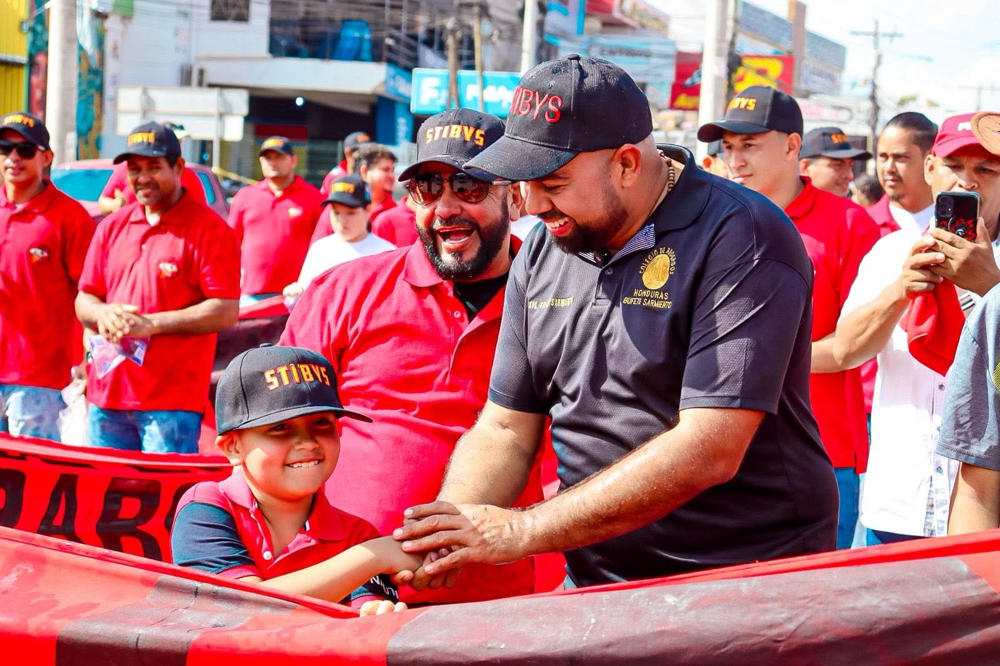
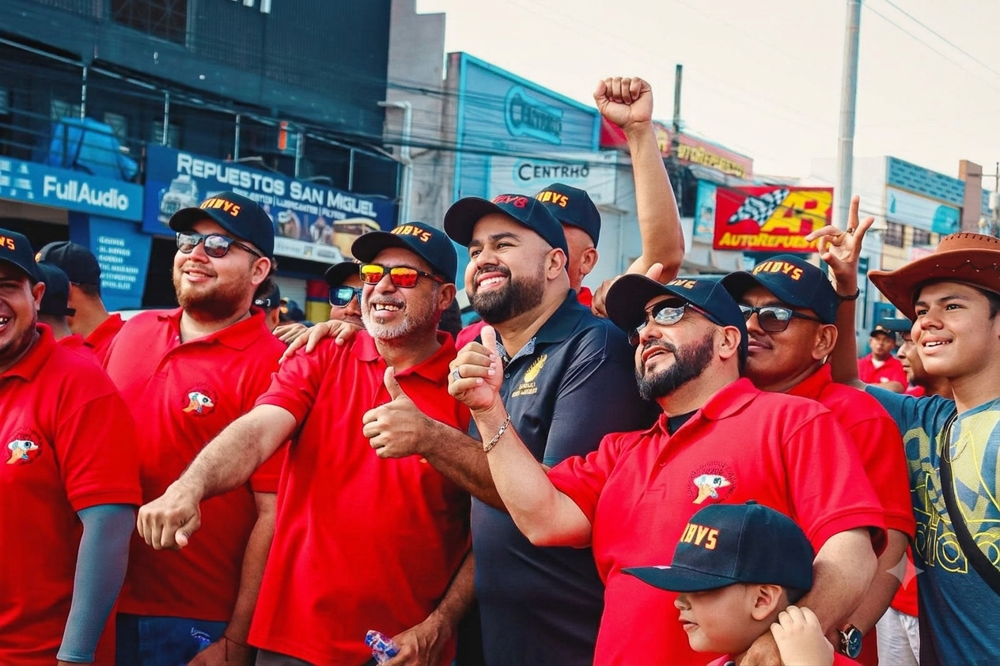
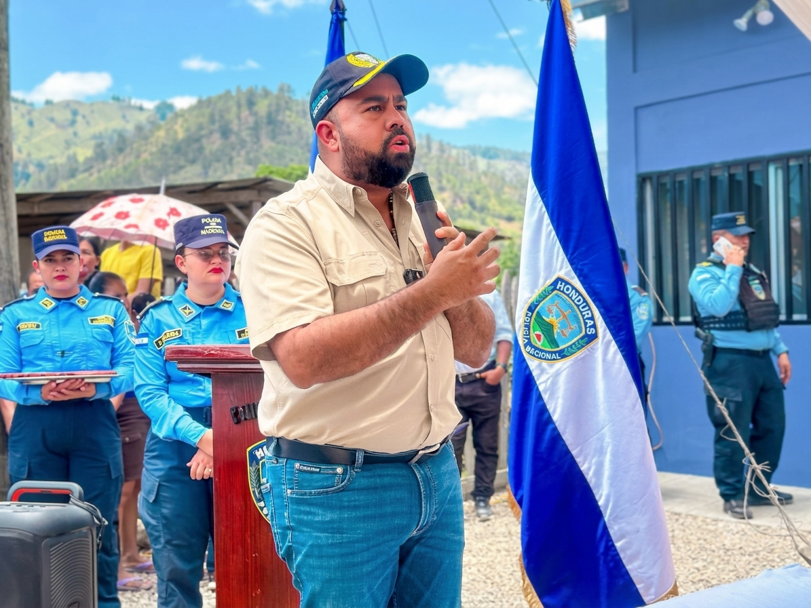
SÉ PARTE
DEL CAMBIO.
Renovación Somos crece con cada persona que decide sumarse. Únete al movimiento y sigamos construyendo una oposición real y constructiva para Honduras.